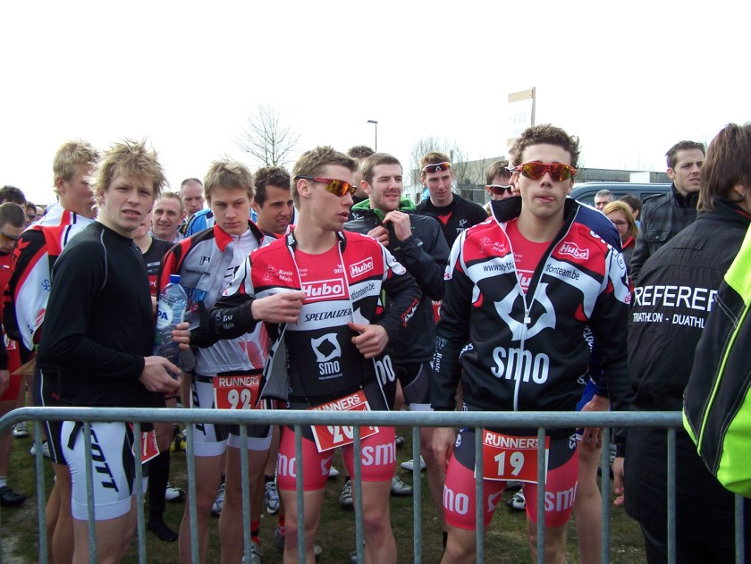
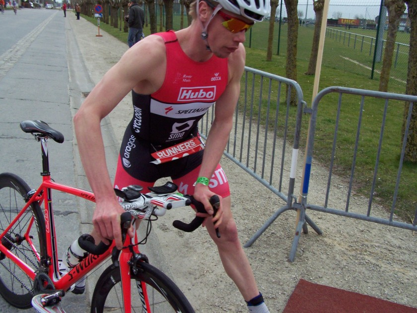
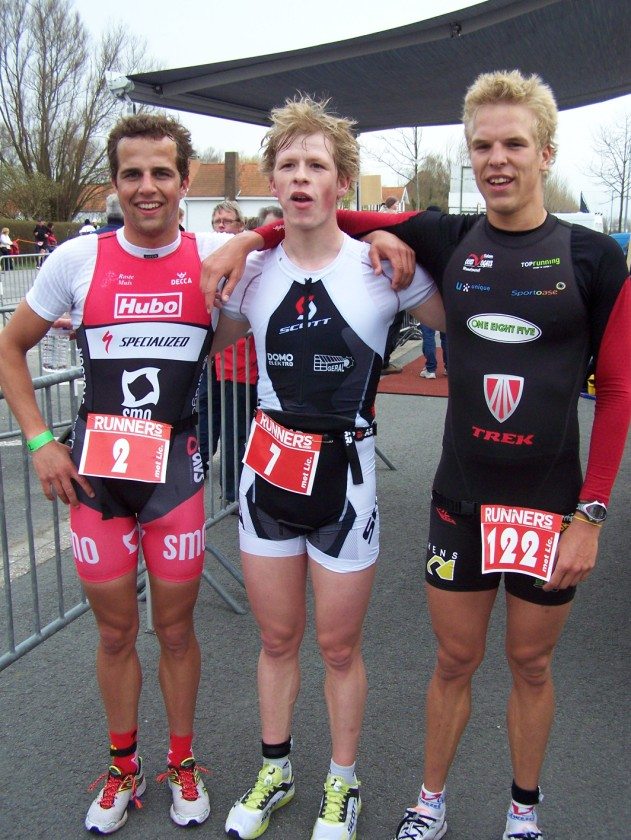

Het voorbije weekend trokken een 20-tal clubgenoten richting Ardennen voor het traditionele fietsweekend. De foto's en een verslag zullen ongetwijfeld volgen. Met het schitterende weer waren ook verschillende atleten aan de slag in competitieverband in veloopzwem De Haan, zwemloop Wachtebeke en duatlon Geluwe.
Onze youngsters Bas (24e) en Jano (26e) waren aan de slag in de zwemloop van Wachtebeke en deden het voortreffelijk. Mieke Depoortere werd vierde in de duatlon van Geluwe. Het wedstrijdverslag van De Haan door Willem kan je hieronder lezen:

Op zaterdag 26 maart ging naar jaarlijkse gewoonte de veloopzwem in De Haan door. Dit is steevast een van de eerste afspraken van het seizoen. Hier komen veel triatleten de conditie al eens testen met zicht op het nakende triatlonseizoen.
Het zwemmen vindt plaats in het zwembad van De Haan en op volgorde van de gezwommen tijden wordt er in de namiddag gestart met het fietsonderdeel, gevolgd door het lopen.
Omdat het maar gaat om 500m zwemmen, is het moeilijk om hier het verschil in te maken. Toch hadden we met vijf atleten, waarvan drie van het SMO triatlonteam (Nick Debusschere, Bas Van Dycke en ikzelf), een voorsprong van 8” op de volgende zwemmer. Het was dus mogelijk om hier ons voordeel uit te halen en onze voorsprong uit te bouwen op de snellere lopers uit het deelnemersveld.
Door het kleine verschil was de wissel naar het fietsen cruciaal, elke seconde telde. Bas en Nick konden snel op hun fiets springen. Ik had problemen om mijn helm te sluiten en verloor zo kostbare seconden. Toch hebben we nog even geprobeerd om de snelle loper, Pieter Heemeryck, af te houden maar dit lukte ons niet. Pieter kwam aansluiten in onze groep.
Zoals elk jaar staat er in de Veloopzwem De Haan een stevige wind. In het fietsonderdeel kan er dus wel een verschil gemaakt worden. Al in de eerste halve ronde besliste Pieter om samen met Nick een aanval op te zetten. Zoals een volleerde teamgenoot besliste Nick om eerst te wachten op mij en vervolgens door te rijden. Zo gingen we met drie in de aanval. We werkten goed samen, vooral de souplesse waarmee Nick reed zorgde ervoor dat we een mooie voorsprong konden uitbouwen op de achtervolgers. Ik voelde mij niet de sterkste van de drie koplopers dus was het ook niet slim om in de aanval te gaan en met misschien 10” voorsprong en zware benen in de wisselzone te komen.

Ik probeerde even mee te lopen met Pieter, maar had al snel door dat dit geen goed plan was. Het tempo lag te hoog en heb van bij het begin mijn eigen tempo gelopen. De benen voelde nog goed aan en ik kon toch een goed ritme vasthouden. Jammer genoeg zag ik Pieter meter per meter van mij weglopen. De laatste 500m werd ik opgeschrokken door een sterk lopende Peter Denteneer die opeens tot op 10” genaderd was. Gelukkig had ik dit op tijd gezien en zat er nog een versnelling in de benen.
Zo behaalde ik, net als vorig jaar, een tweede plaats. De jonge Bas Van Dycke kon zich handhaven in de achtervolgende fietsgroep en zo naar een 15e plaats lopen. De sterke fietser Nick Debusschere nam geen risico en stopte na twee ronden lopen als gevolg van pijn aan de enkel.
Ook Ruben Strobbe, Marc Vanparys, Bart Reyniers en Wim Laloo deden het voortreffelijk bij hun eerste seizoenstest. Laat het echte triatlonseizoen maar snel beginnen!